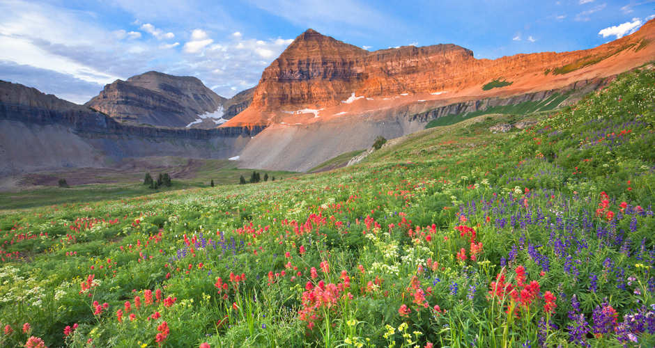
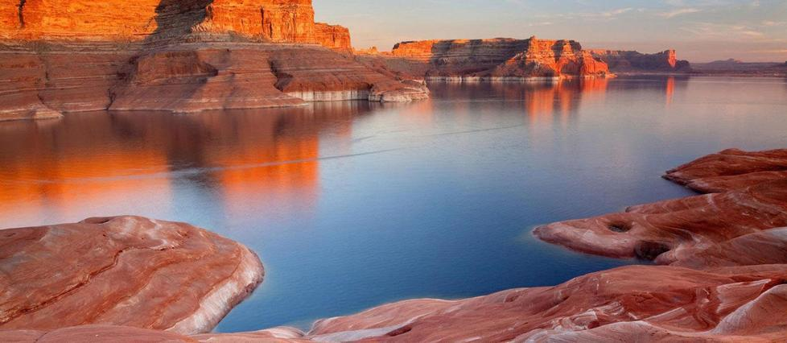

- The summit of Mount Timpanogos is 11,753 ft above sea level.
- There are two main trails to get to its summit:
- Aspen Grove at 6.82 miles long one way
- Timpooneke trail at 7.02 miles long one way
- I have personlly seen two herds of mountain goat up near the summit.

- Lake Powell has over 2,000 feet of shoreline.
- Lake Powell was formed when the Glen Canyon Dam was completed in on the Colorado River in 1963.
- The dam runs a length of 1,560 feet and is 587 feet high. The width at the dam's base is 300 feet.
- It is the fourth highest dam in America.
- It is a popular tourist site and has amazing waters for almost all water sports.
